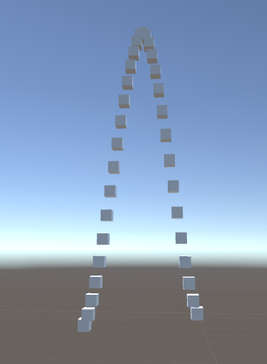

When I first decided to create this post I had a task for a game I’m working on: make something that can put game objects on a curve so we can replicate something similar to Sonic the Hedgehog as seen in figure 1. It didn’t sound like a super easy task since I knew I had to make something very configurable. Luckily, I came across
animation curves
in Unity that make this task very simple. What I thought would be a kind of mathy post turned into a simple implementation post.
Figure 1: Example curve seen in Sonic the Hedgehog.
Animation Curves
Animation curves, as seen in figure 2, provide a way to define curves that animations can follow. This is done with a collection of key frames which store the details of the curve. The way we can interact with it is either build the curve ourselves in code or edit and modify it in the inspector seen in figure 2. Once that is complete we call a function—very similar to Lerp—Evaluate where we provide the time, between 0 and 1, to find the value of the curve at that time step.
Figure 2: Sample animation curve inspector in Unity.
Animation Curves
With AnimationCurves doing the bulk of the heavy lifting for us, this script is very simple to write. For starters we need to allow the user to define a curve which can be seen in lines 5 and 6 of the code below. The [SerializeField] allows a private member to be serialized and seen in the inspector. The inspector then initializes the field with the values that we have defined at run time. After that we can define the object to be spawned, lines 8 and 9. We of course also need to define where the start of the objects being spawned is, lines 11 and 12. We allow extra configurability by allowing the user to define how long the curve will run along the x axis, lines 14 through 16. The [Range] allows us to define a minimum and maximum value for the field that the inspector will enforce for us. We should also allow someone to define how many objects should be spawned along the curve, lines 18 through 20. Lastly, we need a height multiplier such that the user can define how strongly the curve will affect the heights of the objects generated, lines 22 through 24.

FIgure 3: Example arc of cubes generated.
With our variables defined in the inspector, we are now very close to being able to generate what is seen in figure 3. Please note, that adding error checking for null objects is recommended but not done in the script below. The functionality that we are looking for is in lines 28 through 37. We start by looping through the number of objects we will need to spawn. From there we define the point along the curve that we are at with deltaSpawn. Please note, the inspector has enforced that the spawnCount is greater than 0 else we would have to add additional error checking.
With deltaSpawn defined, we can spawn a gameobject, line 32. From there, we only have to set the game objects position, lines 33 through 36. Line 34 defines the x coordinate and lerps between the start position for the x value and the end position for the x value using deltaSpawn to define where along the x axis the object should be spawned. Line 35 uses the start position for the y value plus the value of the curve that we are at which has been multiplied by the heightMutliplier. Lastly, line 36 simply uses the start position z value without any modifications.